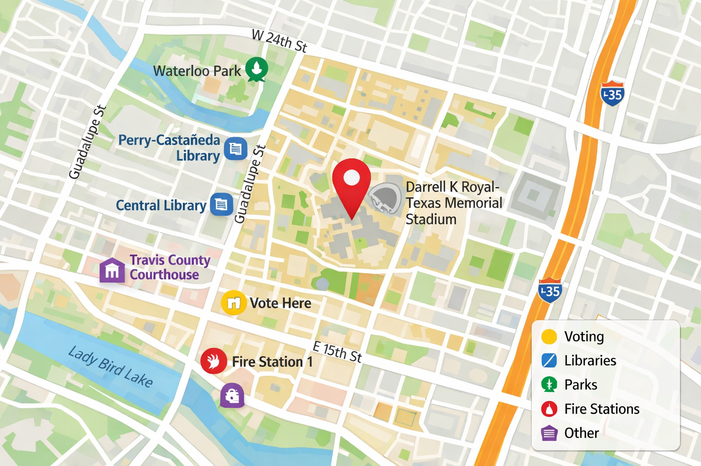

Community Voice at the Corner
Location-based civic feedback.
Share your thoughts
Anonymous by default
Geo: not set
Voice input (transcribe on-device)
Tap “Start dictation” and speak. Transcription appears in the box above. No backend required. Works best in Chrome.
Privacy note
- Anonymous by default: no name requested on this page.
- If you enable location, it is used only to anchor map context (device permissions apply).
- This “Submit” is a demo button in this POC (no server write).
Community resources
Expand sections to view nearby resources. The map shows a demo pin at UT campus unless a QR-specific location is provided.
Map (demo)

assets/ut-map-placeholder.jpg if desired.